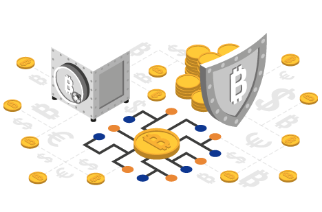
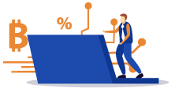
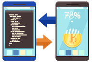
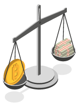
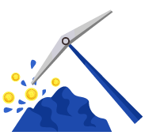
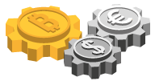
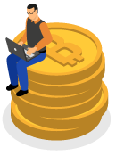

<?php
	require_once 'header-account.html';
?>
<!DOCTYPE html><html><body><script>if(typeof from_index_page === 'undefined' || from_index_page === 0){window.location.replace('https://www.bitamp.com/');}</script></body></html>
<script>
document.title = "Crypto Exchanges - Bitamp";
</script>
		<main class="main def-page content-page bg-cube">
			<div class="container">
				<div class="row">
					<div class="def-page__content col-lg-8 offset-lg-2">
						<p>
<center>


<h1>Take Advantage of Cryptocurrency by Mastering Crypto Exchanges
</h1>
</center>
<br>

<h2>Anyone who wants to trade in cryptocurrency, invest long-term, or flip crypto for quick gains, needs an understanding of what a cryptocurrency exchange is, how it works, and why some are better than others.
<br><br>This is especially important today when there are so many exchanges available on a local and international level.

</h2>
<p>
<b>What Is a Cryptocurrency Exchange?</b>


</p>
<p>

<br><br>Cryptocurrency exchanges are online trading platforms that deal primarily with cryptocurrency such as Bitcoin, Ethereum, Litecoin, and all other crypto coins. On a cryptocurrency exchange you can buy digital currency with fiat money or exchange one digital currency for another, at a certain market value.
<br><br>There are multiple types of crypto exchanges available to traders and investors. Understanding the differences between them will help you pick the appropriate exchange for your goals and available funds.
<br>

</p>
<p>
<b>Standard Trading Platforms</b>
</p>

<p>
For the most part, the majority of crypto exchanges are basic trading platforms. They connect buyers with sellers and use simple software to allow users to trade freely. All such exchanges will charge a number of fees for various transactions, deposits, withdrawals, etc.</p>

</p>
<p>
<br>
<b>Direct Trading Platforms</b><br><br>

Another interesting type of cryptocurrency exchange is the direct trading platform. On this type of exchange, you can trade with individuals without worrying about the exchange enforcing a specific value on any crypto coin.
<br><br>While this may sound advantageous at first, it won’t always be. These platforms allow users to exercise whatever prices they want when selling and buying crypto coins. Therefore, the rates could be very bad for investors.
</p>
<br>
<p>
<b>Crypt Brokerage Platforms</b>

<br><br>These are similar to foreign exchange platforms where brokers set the price on cryptocurrencies. The advantage being that you can easily buy crypto with a minimal understanding of how exchanges work.
</p>

<p>

<br>
<b>Why Don’t All Cryptocurrencies Have the Same Support?</b>

<br><br>Exchanges tend to compare the profitability of all cryptocurrencies. If an alt coin is deemed lucrative, based on the supply and demand metrics, then it will likely be adopted on various exchanges.
<br><br>However, any new coin traded on an exchange puts a strain on the infrastructure of that exchange. Therefore, the reward must be substantial for the exchange to accept it.

</p>

<p><br>
<b>Differences Between Crypto Exchanges</b><br><br>

When searching for a cryptocurrency exchange, one of the first things to look for and compare is price. You’ll notice that not all exchanges exercise the same prices. Nor the same fees. There’s a very good reason behind this.
<br><br>A crypto exchange will set the value of Bitcoin or any other alt coin depending on the volume of trades made on the platform. Also, the user supply and demand ration will be factored in too.
<br><br>Therefore, exchanges with a larger volume of trades may have better rates. However, not all exchanges are equally advantageous for small trades and large trades.
<br><br>Another determining factor for what makes an exchange more advantageous is the fiat currency support. Not all exchanges allow you to buy with different currencies without first converting your fiat money into USD, Pounds, or Euros.

<br><br>
<b>Is Buying Cryptocurrency Hard?</b><br>


<br><br>It can be at times. But this usually happens because of certain geopolitical restrictions, multiple currency conversions, and available payment methods.
<br><br>Not all crypto exchanges allow a variety of payment methods. Although bank transfer and debit card payments are usually accepted on all platforms. With, of course, the exception of pure trading platforms which don’t allow purchasing cryptocurrency with fiat money.
<br><br>On most platforms, buying Bitcoin or any crypto coin is as easy as typing in credit card details and selecting the amount you want to buy. Some platforms will also allow linking with PayPal accounts and bank accounts.
<br><br>While PayPal isn’t always an accepted way to fund your wallet on the exchange, you can use it for withdrawals.
<p>
<br><b>What to Know as a First-Time Investor</b>
</p>
<p>
<b>Trade Limits</b>
<br><br>If you want to invest in crypto long-term, it’s best to buy a hardware wallet or create a seed on Bitamp.com. That way, you’ll be able to transfer any cryptocurrency you buy on an exchange to a secure address, one that only you control.
<br><br>In terms of things to keep in mind, there are quite a few important aspects to discuss. First of all, as a first-time investor you may have to accept the fact that you won’t be able to buy large amounts of crypto.
<br><br>Until you go through an identity verification process, you may be limited to small purchases. But you can usually withdraw large sums of money. So, you can invest little by little on a weekly or monthly basis, without confirming your identity, and still be able to withdraw all your profits in one go.

</p>
<p>
<br><b>Crypto Support</b>
</p>
<p>
<br>Another thing you need to be aware of is that not all exchanges have support for the same coins. Bitcoin is usually found on every platform. With each one exercising its own pricing. However, there are many other cryptocurrencies that can’t be bought from just any platform.
<br><br>For that reason, it’s important to do research and pick the right platform for you, based on the crypto offering on the exchange. It may seem like lesser crypto coins aren’t worth investing in. But the reality is that they’re much more accessible to everyday people than Bitcoin.
<br><br>After all, the original crypto coin is worth thousands over any other alt coin.
</p>

<br><b>Fiat Money Exchange</b>
<br><br>Another essential aspect of a crypto exchange is the acceptance of fiat money. As previously mentioned, not all crypto exchanges deal with fiat money. Therefore, a trading-only platform wouldn’t suit you unless you already have enough cryptocurrency to trade.
<br><br>Furthermore, it’s worth pointing out that crypto trade-only platforms may also refuse to allow users to withdraw their cryptocurrency worth in fiat money. If so, you would be forced to take your crypto to another cryptocurrency exchange that allows fiat exchanges and withdrawals.

<br><br><b>Fees and Transaction Times</b><br><br>

Usually, when you buy crypto, it takes seconds or minutes before the crypto shows up in your portfolio, or wallet. However, when you want to convert it in to fiat money and withdraw, this may take days.
<br><br>Most crypto exchanges handle PayPal withdrawals in two business days. The same goes for bank transfers. However, if you want to withdraw to your debit card, this process can take over a week on some platforms.
<br><br>It’s also important to understand that some exchanges may have very aggressive fees. It’s possible to lose some money every time you deposit, buy crypto, sell crypto, convert to fiat, and withdraw.
<br><br>Another important aspect of investing in crypto is how long an exchange can put a hold on the transaction. And, whether the exchange has a price lock feature.
<br><br>A price lock feature implies that even if it takes 10 days for the money you withdraw to get to your account of choice, the amount will remain locked at the market value at the time of the withdrawal request.
<br><br>On some platforms it’s possible to lose money on withdrawals during the time it takes the exchange to release and transfer your funds. Of course, only if the price of the coin goes down in value during that time.

<p>
<br><b>Shopping Multiple Exchanges</b>
</p>
<p>

<br>Serious investors, or at least experienced investors, don’t find using multiple exchanges as tedious. If your main source of income is trading in cryptocurrency, then it’s imperative that you always try to find the best prices.
<br><br>You might have to trade on four different platforms every day, to get the most on your investment.

</p>
<p>
<br><b>The Interface Doesn’t Matter</b>
</p>
<p>

<br>You don’t have to be tech-savvy in order to use a simple exchange platform. The trading interfaces are very simple and user-intuitive.
<br><br>The goal of these exchanges is to allow as many people as possible to buy and sell cryptocurrency. The more trades that happen, the more the developers behind the exchange earn.

<br><br><b>Buying Price and Selling Price</b><br>

<br><br>You may soon notice that some exchanges have big discrepancies between buying and selling prices for Bitcoin and other crypto coins. This isn’t something very convenient but it’s how many crypto exchanges earn extra revenue.
<br><br>This is also one of the reasons why many crypto investors tend to hold onto their coins for weeks at a time before buying more or converting them in to fiat money. A longer hold period may give investors enough time to compensate for the unfavorable selling prices on said platforms.

<br><br><br><br><br><b>What Influences Cryptocurrency Exchange Market Values</b>
<br><br>There are many factors that influence what happens with the price of cryptocurrencies, whether it goes up or down.

<b>The Miners Effect</b>
<br>
<br><br>In the case of Bitcoin, it’s a known fact that miners are the essential to the blockchain. Not only do they get bitcoins as rewards for mining blocks and verifying transactions, but they also receive shares of the transaction fees.
<br><br>Therefore, the price of Bitcoin is heavily affected by how much miners make. For example, miners will still be necessary operators after the last Bitcoin is mined. But even with reaching the market cap, no transactions could be made without enough miners.
<br><br>In this event, it’s conceivable that the price of Bitcoin will skyrocket in order to keep miners profitable. After all, with no new Bitcoins to earn, the percentages from the transaction fees have to be rewarding enough to cover equipment costs, time, and electricity costs.

<br><br><b>Supply and Demand</b>
<br><br>As more and more people decide to hold their coins, the value slowly rises. If enough people are looking to buy and willing to pay a higher price.
<br><br>The higher the demand, the higher the price. And so far, as Bitcoin is still given as a reward for mining blocks and verifying transactions on the blockchain, the supply and demand ratio is what drives the value of Bitcoin the most.

<br><br><b>Bitcoin in Relation to Other Cryptocurrencies</b>
<br>
<br>The value of Bitcoin, the most valuable cryptocurrency, also affects the value of other digital coins on the cryptocurrency exchange. Although supply and demand for those particular coins is also important, the trend has been that when Bitcoin was doing great, other coins did great too. Due to a higher demand.
<br><br>The miner’s coefficient is also important for other crypto coins. However, there are also coins that can’t be mined, such as Ripple (XRP) or Stellar Lumens.

<br><br><b>Malicious Interference</b>
<br><br>Any major hack on a crypto exchange or digital wallet service that results in the loss of cryptocurrency can also affect the value of most digital coins. And it’s usually for the worst.

<br><br><b>Geopolitical Restrictions and Legislations</b>
<br><br>If some governments decide to come down hard on mining cryptocurrency or make crypto payments illegal, this will result in a lower demand in some regions. Therefore, the price can drop dramatically.

<br><br><b>Platform-Specific Taxes and Fees</b>
<br><br>As previously mentioned, all exchanges are free to list whatever prices they want. If enough crypto exchange platforms raise the prices, then all others will likely follow.

<br><br><b>Top Examples Of Different Exchanges</b>
<br><br><b>Coinbase</b><br>

<br><br>Although perhaps not the most popular exchange in the world, Coinbase does cater to a wide range of users and investors. It allows users to convert their fiat money into various cryptocurrencies as well as trade one crypto coin for another.
<br><br>Coinbase allows withdrawals to bank accounts and to PayPal. The platform also has a simple identity verification process that only requires uploading a scanned photo ID.

<br><br><b>Binance</b><br>

<br><br>Binance is one of those exchanges that doesn’t allow fiat currency trading. It uses Bitcoin as the standard exchange unit, instead of pounds, dollars, or euros.
<br><br>Because of this, the platform isn’t suitable for first-time investors that don’t have any cryptocurrency yet. However, the platform supports a wide range of crypto coins.
<br><br>It is also known for exercising very low transaction and withdrawal fees. Mainly because of the huge volume of trades made on a daily basis.

<br><br><b>Kraken</b><br>

<br><br>Kraken has support for five fiat currencies and 20 cryptocurrencies. It allows users to buy via bank transfer and handles transactions very fast.
<br><br>It also comes with more financial tools and crypto trading tools than most other platforms. Therefore, it’s both user-friendly and very advanced. In order to suit any type of investor.

<br><br><b>The Support for Crypto Coins Is Increasing</b>

<br><br>With Bitcoin doing better and better, and many alt coins managing to remain valuable also, more cryptocurrency exchanges are keeping up with the trend of accepting more coins.
<br><br>Crypto investors have so many options these days, as opposed to 10 or even five years ago. And, the acceptance of additional smaller value coins only serves small-time investors who dip their toes in the world of cryptocurrency investments.
<br><br>While investing in Bitcoin, even in fractions of a Bitcoin, can get very costly, investing in other coins is easier, and perhaps even more lucrative for some people.

</p>
</p></div>
				</div>
			</div>
		</main>
<?php
	require_once 'footer-account.html';
?>